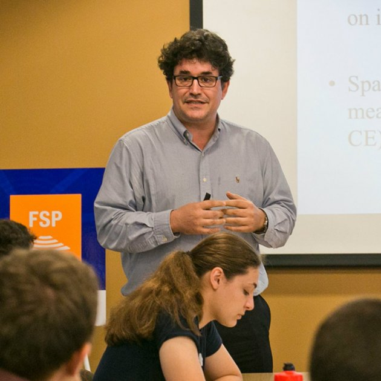

El nostre equip
El projecte REPBIAS està format per un equip acadèmic multidisciplinar de primer nivell, amb investigadors provinents d’universitats punteres arreu del món.
Investigador principal: Marc Guinjoan
Marc Guinjoan és Professor Agregat a la Facultat de Dret i Ciències Polítiques de la Universitat Oberta de Catalunya, i Research Fellow al Institutions and Political Economy research group (IPErG, Universitat de Barcelona), liderat per Carles Boix. Un dels principals camps d’interès de Marc Guinjoan és l’estudi de les institucions electorals. La seva tesi doctoral fou escrita vers aquest camp, i va ser publicada el 2014 per Routledge. També té diversos articles acadèmics en revistes indexades peer reviewed com la Government and Opposition, l’European Journal of Political Research, la Public Opinion Quarterly i la Social Science Quarterly, entre d’altres.

Research Team
Carles Boix és distinguished professor al IPErG (UB), i catedràtic Robert Garrett a la Universitat de Princeton, als EEUU. Boix, com a director de l’IPErG fou el cap del projecte Beramendi et al (2021) i té coneixement profund i publicacions extenses sobre el camp de les institucions electorals. Específicament, Boix ha treballat extensament tant en els orígens endògens de les institucions (Boix 1999, Abramson & Boix 2019, Boix & Stokes 2003), com en el camp de la economia política històrica (Boix 2010, Amat et al. 2020, Basu et al. 2019, Boix & Roesnbluth 2014). Les publicacions del Professor Boix han aparegut a revistes tant prestigioses com APSR (6 publicacions), AJPS (3), International Organization (2), CPS, the JoP, BJPS (2) i World Politics (3), entre moltes altres. Addicionalment, Boix ha publicat tres llibres a través de Cambridge University Press i un llibre amb Princeton University Press, entre d’altres.

Jordi Mas va obtenir el seu doctorat per la Universitat Autònoma de Barcelona el 2016, i la seva recerca inclou camps com l’economia política, política internacional, regionalisme i metodologia en ciències socials. Ha publicat a la JCMS i un manual d’ús d’R en Estudis Internacionals. Com a expert en ús d’R, Mas guiarà i supervisarà tot el treball metodològic del projecte que requereixi l’ús extensiu de dades quantitatives (R1 R2 i R3). Finalment, ell també està implicat en un projecte dirigit a expandir estudis sobre regionalisme a través de la construcció d’un extens dataset que serà de particular interès pel projecte REPBIAS a la RL4.

Working Team
Pablo Beramendi és catedràtic a la universitat de Duke, als EEUU. El seu treball engloba diferents aspectes de la economia política de la desigualtat i la redistribució, concentrant-se específicament en la dimensió territorial dels conflictes distributius. Beramendi té articles publicats a CPS (4), IO, the JoP (2), BJPS, WP, EJPR, Annual Review of Political Science, the Review of International Organizations (RIO) i ha publicat dos llibres a través de Cambridge University Press.

Melissa Rogers és professora a la Claremont Graduate University. És especialista en política comparada, geografia política, economia política, política llatinoamericana i institucions polítiques comparades. El seu treball ha sigut publicat a the JoP (2), Politcal Analysis (2), RIO i té un llibre publicat a través de Cambridge University Press.

Toni Rodon és professor Lector a la Universitat Pompeu Fabra. La seva recerca abarca la participació electoral, la geografia política, la política comparada i la economia política històrica. Rodon ha treballat intensament amb dades quantitatives sobre la Segona República Espanyola (Rodon 2020, Muñoz et al. 2017, Amat et al. 2020), i contribuirà al projecte a través del procés de modificació i administració de dades, especialment en les que tracten els resultats electorals i els debats sobre la creació del sistema electoral de vot limitat durant la Segona República Espanyola. Rodon ha publicat en revistes com APSR, the JoP (2), BJPS, PSRM, Political Geography, JEPP i Socio-Economic Review. Com a curiositat, presenta juntament amb Marc Guinjoan un programa de divulgació científica a la ràdio nacional de Catalunya, anomenat La Segona Volta.

Estudiant de Doctorat
Jaime Bordel és autor del llibre “Salvini & Meloni. Hijos de la misma rabia”. Ha fet el màster en Ciències Socials a la Universitat Juan Carlos III-Instituto Juan March.

Assistents de recerca
David Carbonell és politòleg i analista de dades

Xavier Roura és politòleg per la Universitat Autònoma de Barcelona, i ha fet el Master in Institutions and Political Economy de la Universitat de Barcelona.